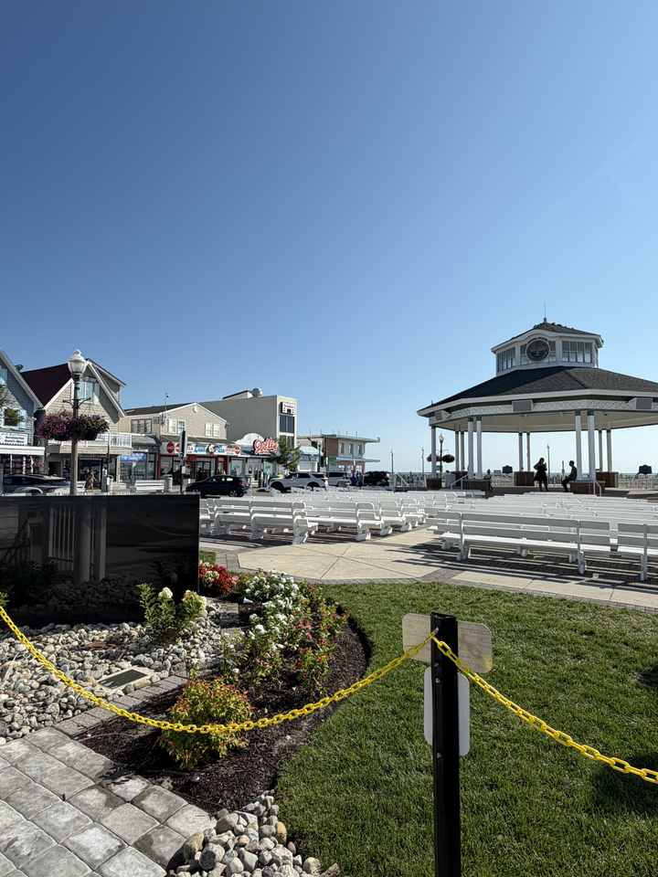
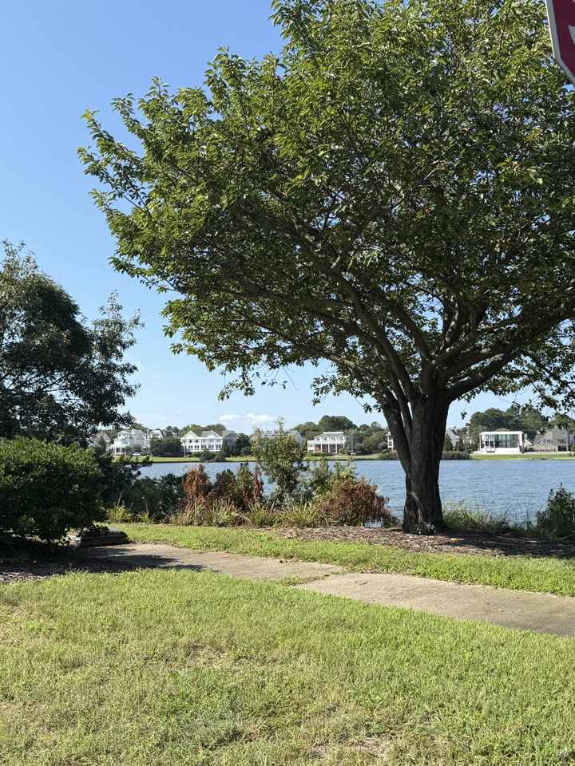

Rehoboth can change character in a handful of blocks. At the Bandstand, everything points east toward the boardwalk, ocean and crowd. South of downtown, Silver Lake is the opposite frame: reeds, still water, cottages and birds.
The contrast is useful because it makes the town legible. Rehoboth is not simply the boardwalk with houses behind it; its lakes and quieter residential edges are part of the same one-square-mile city.
The city’s comprehensive plan describes Silver Lake as roughly 42 acres and notes that Delaware established it as a State Bird Refuge in 1933. That makes it more than scenery — it is one of the places where the resort town abruptly gives way to freshwater habitat.


Sources: City of Rehoboth Beach 2020 Comprehensive Development Plan; Save Our Lakes Alliance 3.